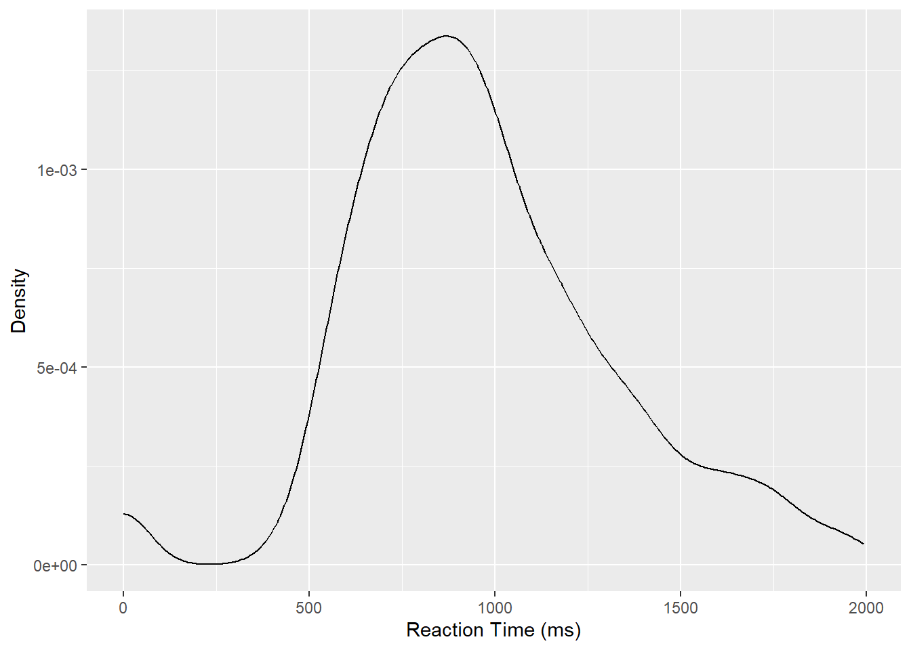

We want to include only data from L2critical trials. So we will exclude group L1 and critical_filler filler. Then look for mean and sd of reaction times in those L2 participants.
Libraries
library(tidyverse)
Warning: package 'tidyverse' was built under R version 4.5.3
Warning: package 'ggplot2' was built under R version 4.5.3
Warning: package 'tidyr' was built under R version 4.5.3
Warning: package 'readr' was built under R version 4.5.3
Warning: package 'purrr' was built under R version 4.5.3
Warning: package 'forcats' was built under R version 4.5.3
Warning: package 'lubridate' was built under R version 4.5.3
── Attaching core tidyverse packages ──────────────────────── tidyverse 2.0.0 ──
✔ dplyr 1.2.0 ✔ readr 2.2.0
✔ forcats 1.0.1 ✔ stringr 1.6.0
✔ ggplot2 4.0.2 ✔ tibble 3.3.1
✔ lubridate 1.9.5 ✔ tidyr 1.3.2
✔ purrr 1.2.1
── Conflicts ────────────────────────────────────────── tidyverse_conflicts() ──
✖ dplyr::filter() masks stats::filter()
✖ dplyr::lag() masks stats::lag()
ℹ Use the conflicted package (<http://conflicted.r-lib.org/>) to force all conflicts to become errors
library(ggplot2)library(dplyr)library(brms)
Warning: package 'brms' was built under R version 4.5.3
Loading required package: Rcpp
Warning: package 'Rcpp' was built under R version 4.5.3
Loading 'brms' package (version 2.23.0). Useful instructions
can be found by typing help('brms'). A more detailed introduction
to the package is available through vignette('brms_overview').
Attaching package: 'brms'
The following object is masked from 'package:stats':
ar
Summary measures:
First group by the columns we want then we can filter them.
shallow <-read_csv("./data/song2020/shallow.csv")
Rows: 6500 Columns: 11
── Column specification ────────────────────────────────────────────────────────
Delimiter: ","
chr (8): Group, ID, List, Target, Critical_Filler, Word_Nonword, Relation_ty...
dbl (3): ACC, RT, logRT
ℹ Use `spec()` to retrieve the full column specification for this data.
ℹ Specify the column types or set `show_col_types = FALSE` to quiet this message.
#You can also create a variable with <- if it helps, but keeping it as a tibble, as shown below, is helpful for showing the result when exporting the document. The variable is useful for creating a plot.shallow |>group_by(Group, Critical_Filler) |>summarise(mean =mean(RT, na.rm =TRUE),sd =sd(RT, na.rm =TRUE) ) |>filter( Group =="L2", Critical_Filler =="Critical" )
`summarise()` has regrouped the output.
ℹ Summaries were computed grouped by Group and Critical_Filler.
ℹ Output is grouped by Group.
ℹ Use `summarise(.groups = "drop_last")` to silence this message.
ℹ Use `summarise(.by = c(Group, Critical_Filler))` for per-operation grouping
(`?dplyr::dplyr_by`) instead.
# A tibble: 1 × 4
# Groups: Group [1]
Group Critical_Filler mean sd
<chr> <chr> <dbl> <dbl>
1 L2 Critical 968. 354.
## We can create a dataframe with the filtered values alsoshallow_l2_critical <- shallow |>filter( Group =="L2", Critical_Filler =="Critical" )
The mean reaction time of critical L2 participants is 967.75ms and the standard deviation around the mean is approximately 354.06ms.
Plot
shallow |>filter( Group =="L2", Critical_Filler =="Critical" ) |>ggplot(aes(x = RT)) +geom_density() +labs(x ="Reaction Time (ms)",y ="Density" )

Model
We create the model with the mean and sd values we calculated:
WARNING: Rtools is required to build R packages, but is not currently installed.
Please download and install the appropriate version of Rtools for 4.5.2 from
https://cran.r-project.org/bin/windows/Rtools/.
Trying to compile a simple C file
Running "C:/PROGRA~1/R/R-4.5.2/bin/x64/Rcmd.exe" SHLIB foo.c
using C compiler: 'gcc.exe (GCC) 14.3.0'
gcc -I"C:/PROGRA~1/R/R-4.5.2/include" -DNDEBUG -I"C:/Users/lachl/AppData/Local/R/win-library/4.5/Rcpp/include/" -I"C:/Users/lachl/AppData/Local/R/win-library/4.5/RcppEigen/include/" -I"C:/Users/lachl/AppData/Local/R/win-library/4.5/RcppEigen/include/unsupported" -I"C:/Users/lachl/AppData/Local/R/win-library/4.5/BH/include" -I"C:/Users/lachl/AppData/Local/R/win-library/4.5/StanHeaders/include/src/" -I"C:/Users/lachl/AppData/Local/R/win-library/4.5/StanHeaders/include/" -I"C:/Users/lachl/AppData/Local/R/win-library/4.5/RcppParallel/include/" -DRCPP_PARALLEL_USE_TBB=1 -DTBB_INTERFACE_NEW -IC:/Users/lachl/AppData/Local/R/win-library/4.5/RcppParallel/include -I"C:/Users/lachl/AppData/Local/R/win-library/4.5/rstan/include" -DEIGEN_NO_DEBUG -DBOOST_DISABLE_ASSERTS -DBOOST_PENDING_INTEGER_LOG2_HPP -DSTAN_THREADS -DUSE_STANC3 -DNEW_RSTAN -DSTRICT_R_HEADERS -DBOOST_PHOENIX_NO_VARIADIC_EXPRESSION -D_HAS_AUTO_PTR_ETC=0 -include "C:/Users/lachl/AppData/Local/R/win-library/4.5/StanHeaders/include/stan/math/prim/fun/Eigen.hpp" -D_REENTRANT -DRCPP_PARALLEL_USE_TBB=1 -I"F:/rtools45/x86_64-w64-mingw32.static.posix/include" -O2 -Wall -std=gnu2x -mfpmath=sse -msse2 -mstackrealign -c foo.c -o foo.o
In file included from <command-line>:
C:/Users/lachl/AppData/Local/R/win-library/4.5/StanHeaders/include/stan/math/prim/fun/Eigen.hpp:3:10: fatal error: stdexcept: No such file or directory
3 | #include <stdexcept>
| ^~~~~~~~~~~
compilation terminated.
make: *** [C:/PROGRA~1/R/R-4.5.2/etc/x64/Makeconf:289: foo.o] Error 1
WARNING: Rtools is required to build R packages, but is not currently installed.
Please download and install the appropriate version of Rtools for 4.5.2 from
https://cran.r-project.org/bin/windows/Rtools/.
Family: gaussian
Links: mu = identity
Formula: RT ~ 1
Data: shallow_l2_critical (Number of observations: 1080)
Draws: 4 chains, each with iter = 2000; warmup = 1000; thin = 1;
total post-warmup draws = 4000
Regression Coefficients:
Estimate Est.Error l-95% CI u-95% CI Rhat Bulk_ESS Tail_ESS
Intercept 967.47 10.41 947.27 988.03 1.00 3361 2702
Further Distributional Parameters:
Estimate Est.Error l-95% CI u-95% CI Rhat Bulk_ESS Tail_ESS
sigma 354.40 7.71 339.63 370.21 1.00 3298 2547
Draws were sampled using sampling(NUTS). For each parameter, Bulk_ESS
and Tail_ESS are effective sample size measures, and Rhat is the potential
scale reduction factor on split chains (at convergence, Rhat = 1).